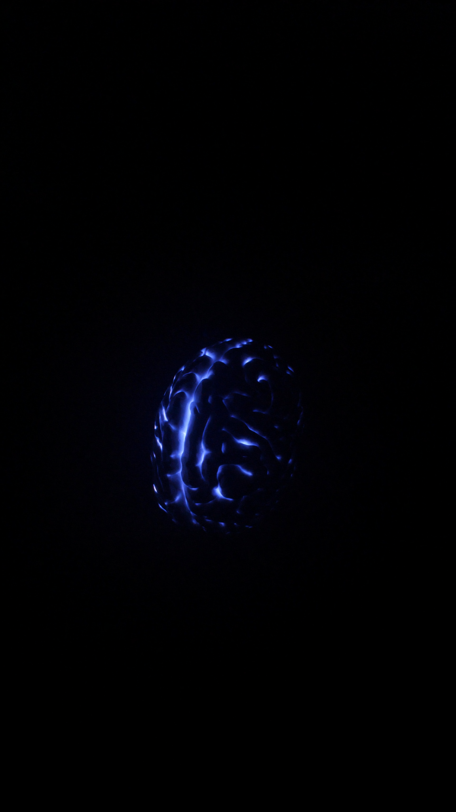
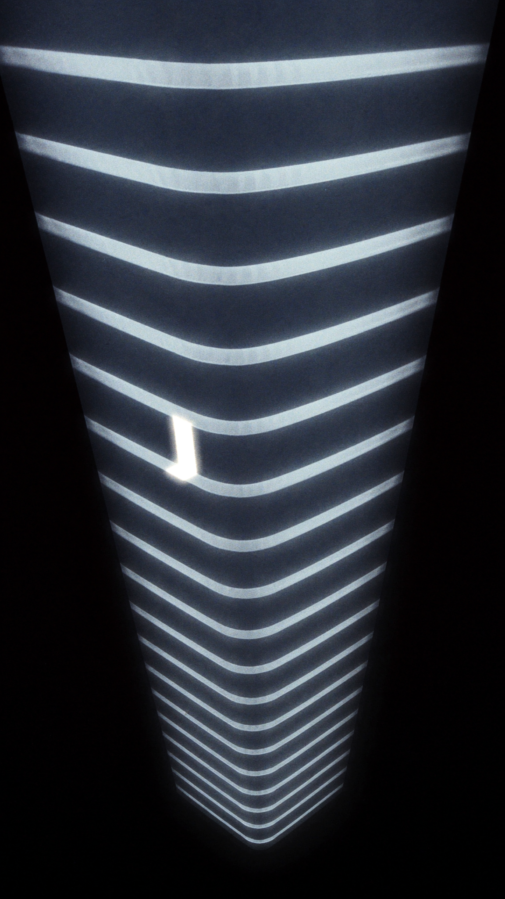
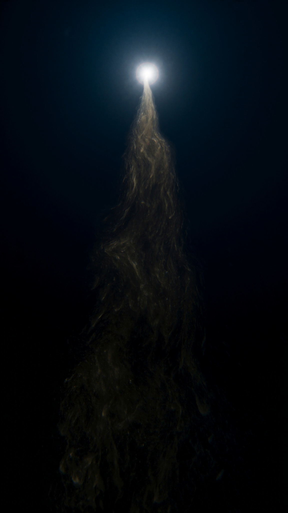
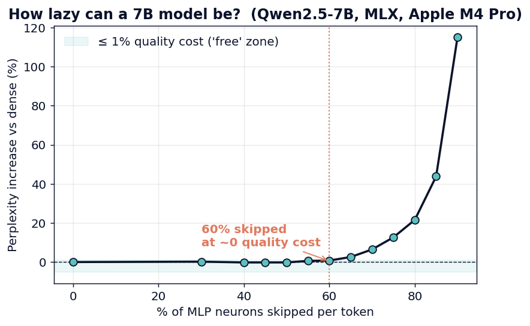
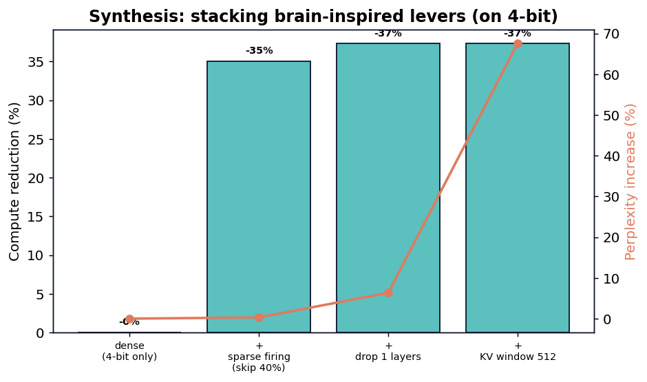

Episode 1 · Sparse firing
The Lazy Brain
A dense model fires 100% of its neurons on every word. So I switched off the ones that barely fire.
Skip 60% of neurons → <1% quality loss · ~52% less compute
Your brain runs general intelligence on about 20 watts. An AI needs a rack of GPUs. I copy one brain efficiency trick per episode — and measure it honestly on a real 7B model, on a laptop.
A popular take says you cut AI energy by lowering resolution (4-bit quantization). True, but minor. The brain runs on 20 watts because fewer than 1% of its neurons fire at once, it predicts away the expected, and it keeps only the gist. This series targets those — computation, depth, and memory — not just storage. And every claim is checked against the unmodified model first (max difference = 0), so a win is never just a bug.

A dense model fires 100% of its neurons on every word. So I switched off the ones that barely fire.

Everyone says models are "too deep, just delete layers." I tested it. They're wrong — and that's the point.

Cut 93% of the memory and it was fine. Delete one token and it broke completely.
Held-out perplexity barely moves as you switch off neurons — until about 60%. Stack sparse firing on top of 4-bit and you get a model that's 4× smaller and ~35% cheaper to run, at +0.3% perplexity.


Every intervention is checked against the unmodified model (max |Δ| = 0) before any claim.
Every compute figure ships with its quality cost. Never a lone "10×."
Episode 2 came up short, and it's published as-is. That's what makes the wins credible.
One command per experiment, on an Apple M4 Pro via MLX. Open code and data.